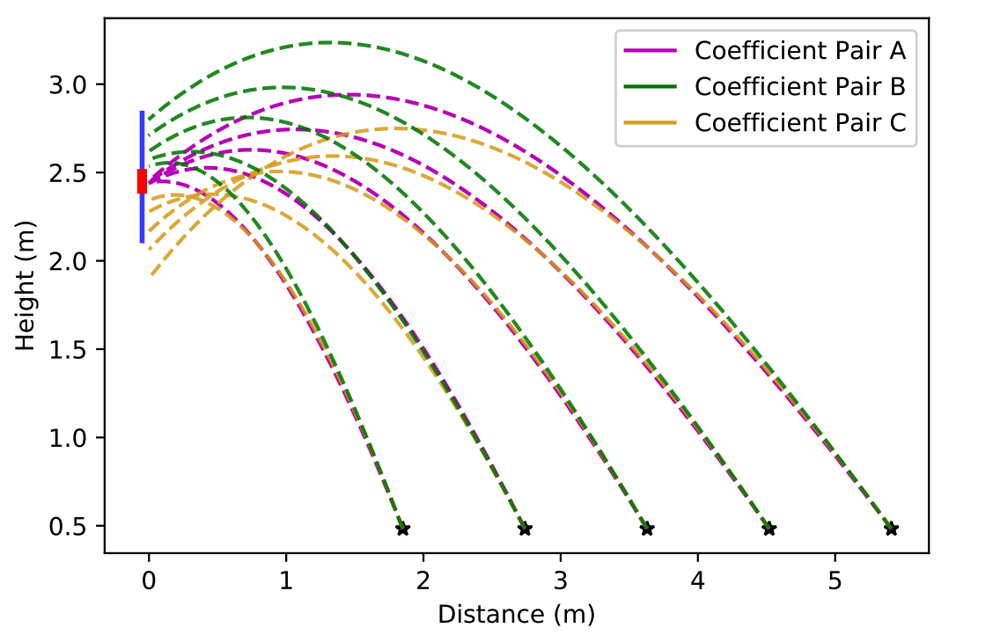
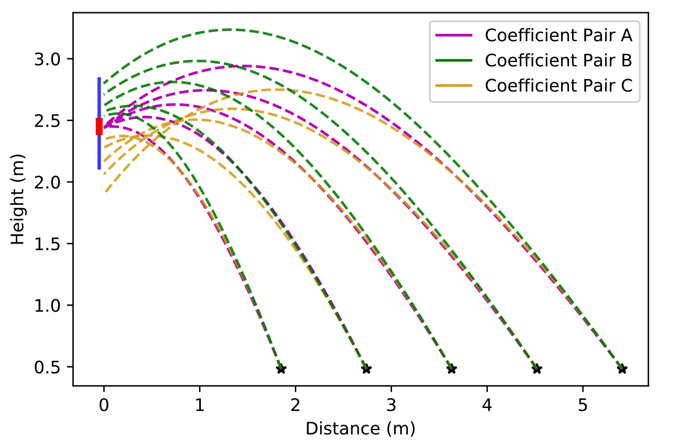
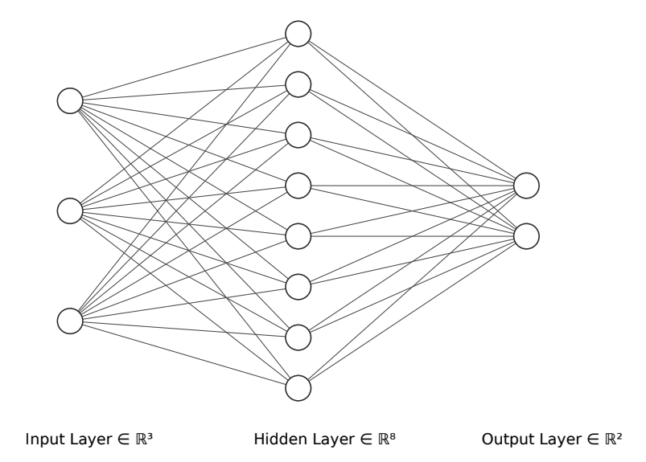

Force Coefficient Estimation
To tune our simulator to the parameters of the specified object, we estimate coefficients for lift and drag forces algorithimically by comparing predicted outcomes from the simulator with actual outcomes.

This paper was accepted to 6th Asia-Pacific Conference on Intelligent Robot Systems (ACIRS 2021) which will be held in July 2021.
Modeling of non-rigid object launching and manipulation is complex considering the wide range of dynamics affecting trajectory, many of which may be unknown. Using physics models can be inaccurate because they cannot account for unknown factors and the effects of the deformation of the object as it is launched; moreover, deriving force coefficients for these models is not possible without extensive experimental testing. Recently, advancements in data-powered artificial intelligence methods have allowed learnable models and systems to emerge. It is desirable to train a model for launch prediction on a robot, as deep neural networks can account for immeasurable dynamics. However, the inability to collect large amounts of experimental data decreases performance of deep neural networks. Through estimating force coefficients, the accepted physics models can be leveraged to produce adequate supplemental data to artificially increase the size of the training set, yielding improved neural networks. In this paper, we introduce a new framework for algorithmic estimation of force coefficients for non-rigid object launching, which can be generalized to other domains, in order to generate large datasets. We implement a novel training algorithm and objective for our deep neural network to accurately model launch trajectory of non-rigid objects and predict whether they will hit a series of targets. Our experimental results demonstrate the effectiveness of using simulated data from force coefficient estimation and shows the importance of simulated data for training an effective neural network.
To tune our simulator to the parameters of the specified object, we estimate coefficients for lift and drag forces algorithimically by comparing predicted outcomes from the simulator with actual outcomes.
Our neural network is essential to the performance of the launch modeler, as it generates a prediction based on the large set of generated data in combination with the experimentally collected data.
This graph shows comparison of experimentally measured trajectories and trajectories generated by the simulator using estimated force coefficients (left). Inaccuracy of generated trajectories using estimated force coefficients in comparison to experimental trajectories on the test set (right).
This table shows the accuracy and F1-scores for our neural network on the testset with varying quantities of simulated data.
@misc{shah2021simulated
title={Simulated Data Generation Through Algorithmic Force Coefficient Estimation for AI-Based Robotic Projectile Launch Modeling},
author={Sajiv Shah and Ayaan Haque and Fei Liu},
year={2021},
eprint={2105.12833},
archivePrefix={arXiv},
primaryClass={cs.RO}
}